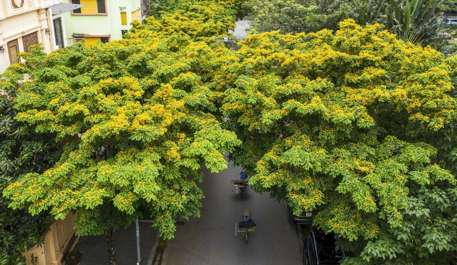
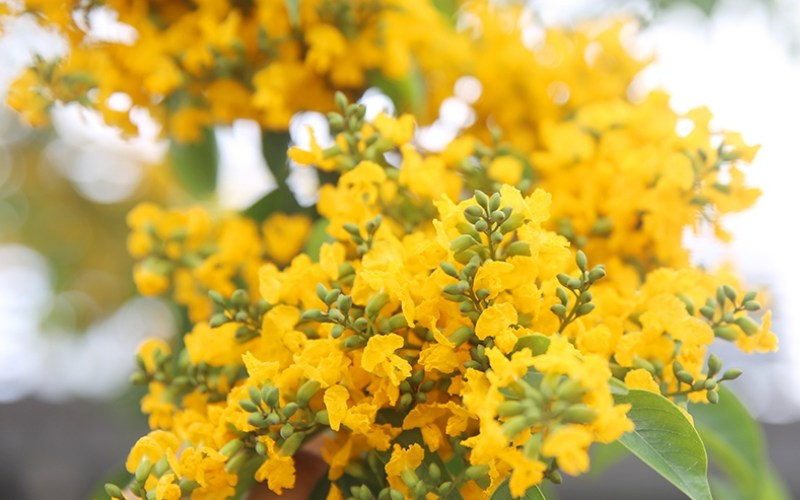

1. Đặc điểm hình thái
Cây dáng hương quả to có chiều cao trung bình từ 10m đến 30m, đường kính thân cây có thể lên đến 1,7m.
Lá cây dài 20 cm đến 35 cm, hình lông chim với 9 đến 11 lá chét. Hoa màu vàng, cành hoa dài 5 cm đến 9 cm. Quả có đường kính 4,5 cm đến 7 cm, chứa hai hoặc ba hạt[3][4]
Cây có khả năng tái sinh bằng chồi hoặc hạt.


2. Phân bố
phân bố chủ yếu ở Kon Tum, Tây Ninh, Đăk Lăk, Gia Lai và một khu vực ở Đông Nam Bộ.